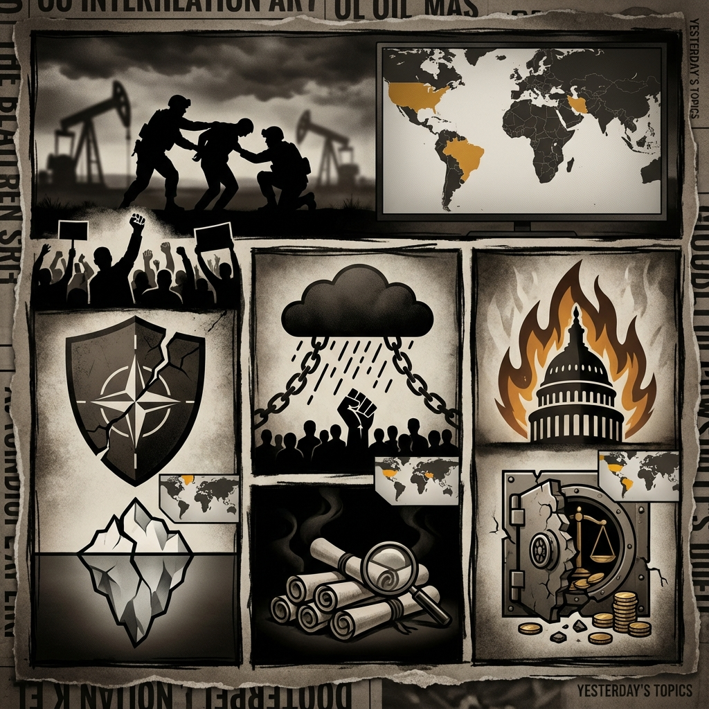

The Daily Globe: EUA Capturam Presidente Venezuelano Nicolás Maduro em Operação Polêmica, Aniversário de 6 de Janeiro Reacende Fúria Política nos EUA, and Escândalo do Banco Master: O Maior da História do Brasil?
Published on 2026-01-07

World
- EUA Capturam Presidente Venezuelano Nicolás Maduro em Operação Polêmica
Maduro e esposa se declaram não culpados em tribunal de NY por narcoterrorismo; condenação internacional da ONU, Rússia e China; Trump promete administrar Venezuela temporariamente e acessar reservas de petróleo.
- Primeira-Ministra Dinamarquesa Avisa: Invasão à Groenlândia Acabaria com OTAN
Tensões crescem sobre segurança ártica enquanto Trump pressiona por controle, rachando alianças.
- Repressão Mortal a Protestos no Irã Amid Pressão dos EUA
36 mortos incluindo crianças; Trump rejeita negociações e impõe mais sanções.
USA
- Aniversário de 6 de Janeiro Reacende Fúria Política nos EUA
Debates sobre indultos, tentativas de golpe e ameaças à democracia dominam discussões.
- Maduro Julgado em NY Após Captura pelos EUA
Apoiadores de Trump celebram; críticos chamam de sequestro e imperialismo.
- Arquivos Epstein: DOJ Libera Menos de 1% Amid Acusações de Acobertamento
Teorias da conspiração ligam elites e presidentes a escândalo de tráfico sexual.
Brazil
- Escândalo do Banco Master: O Maior da História do Brasil?
Denúncias de irregularidades financeiras, fraudes e conluio com TCU, STF e Banco Central; ligações ao ministro Alexandre de Moraes e família.
- Nikolas Ferreira Acusa Blindagem Governamental no Caso Banco Master
Deputado questiona proteção a banqueiros investigados por fraudes no sistema financeiro.
- Crise na Venezuela Desvia Atenção do Escândalo Banco Master
Usuários no X alertam para não ignorar problemas internos em meio a notícias internacionais.
Topic Index
- venezuela-crisis
- maduro-capture
- nato-greenland
- iran-protests
- jan6-anniversary
- epstein-files
- banco-master
- financial-scandal